始める前に、2つだけ確認してください。
こんな確認が出るので、右下の「ダウンロード」を押してください。
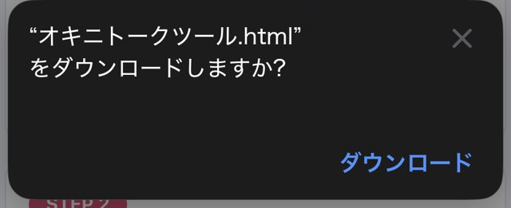
右下の「ダウンロード」を押す
この通知が出れば、保存は完了です。
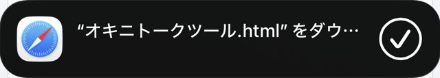
Safariをいったん閉じて、ホーム画面の設定アプリを開いてください。
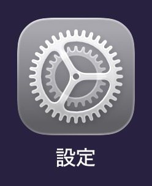
設定の画面を一番下までスクロールすると「アプリ」があります。
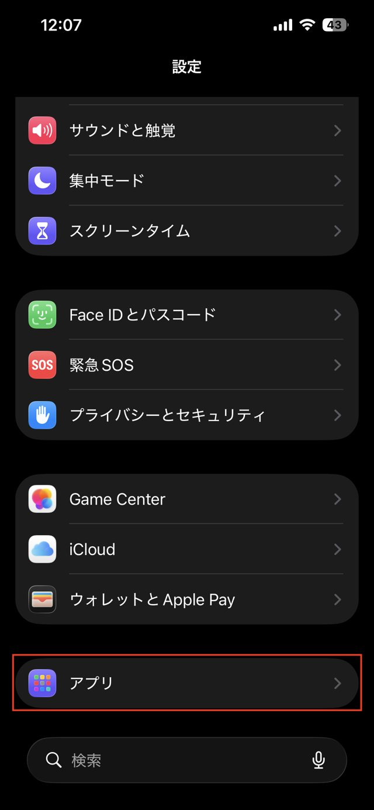
赤枠の「アプリ」を押す
アプリが名前順に並んでいます。S のところにあります。
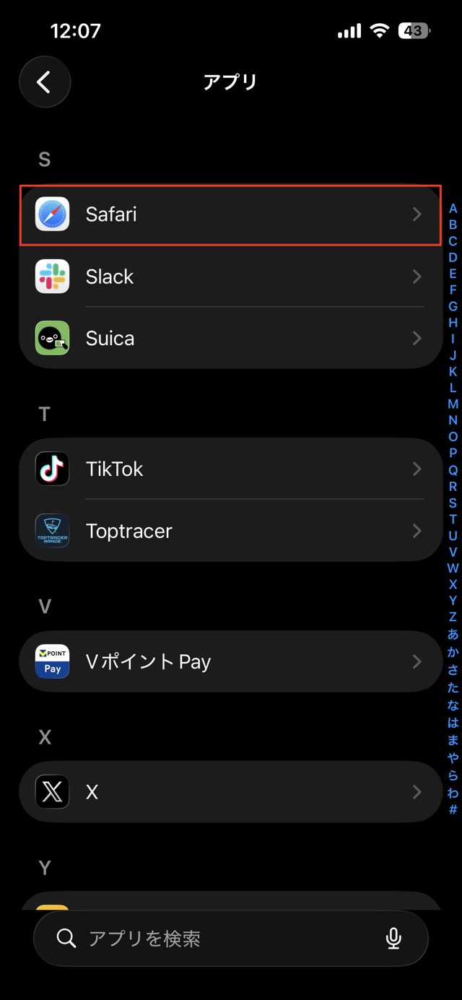
赤枠の「Safari」を押す
Safariの設定を下にスクロールすると「履歴とWebサイトデータ」の中にあります。
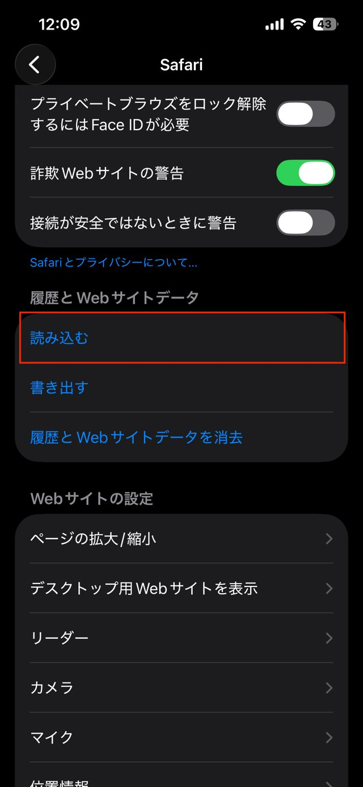
赤枠の「読み込む」を押す
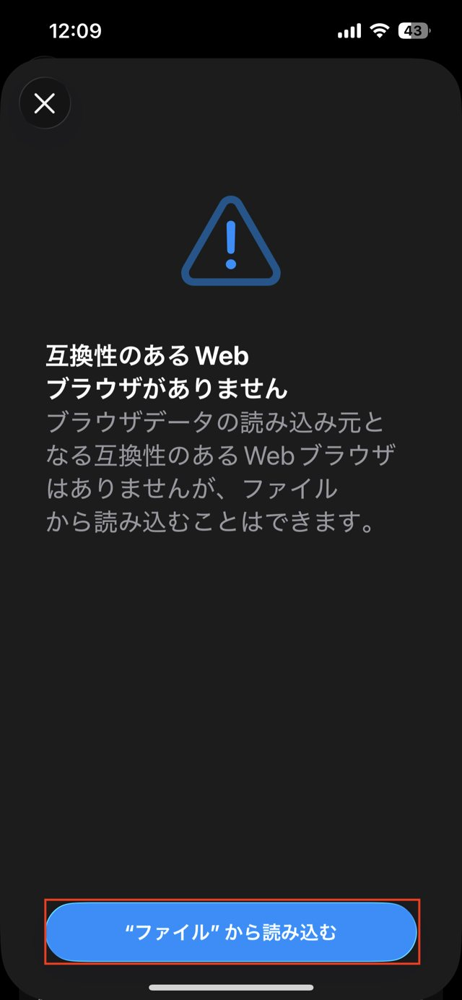
赤枠のボタンを押す
オキニトークツール と表示されていればOKです。ファイルは自動で見つかるので、探す必要はありません。
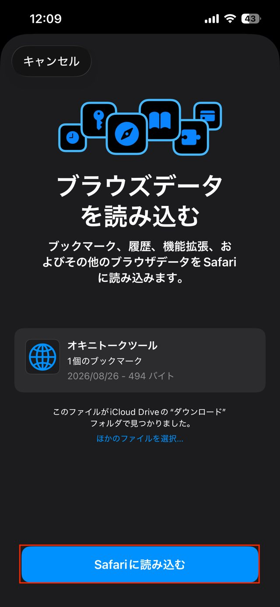
赤枠の「Safariに読み込む」を押す
「読み込みに成功しました」と出れば成功です。
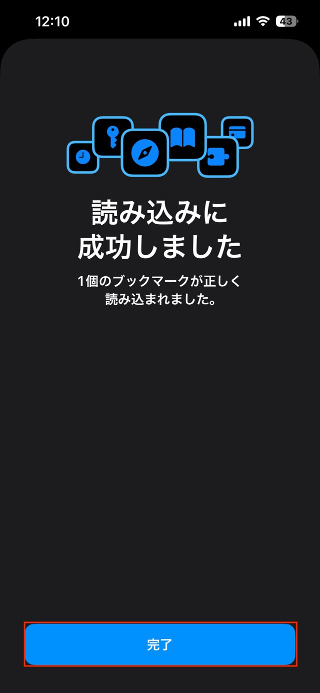
赤枠の「完了」を押す
ファイルを消すか聞かれます。もう使わないので消して大丈夫です。
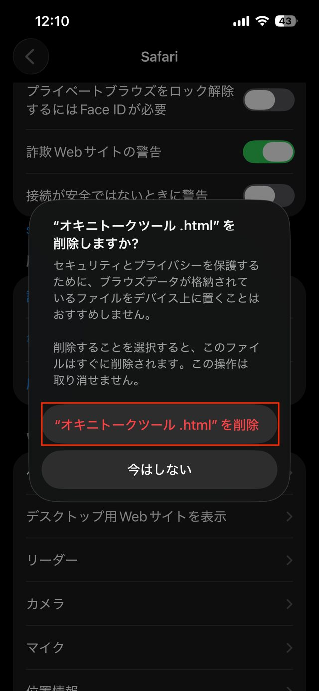
赤枠の「削除」を押す（「今はしない」でも問題ありません）
Safariで姫デコにログインし、オキニトーク一覧のページを開きます。
そのあと画面右下の「・・・」を押して、下の本のアイコンを押します。
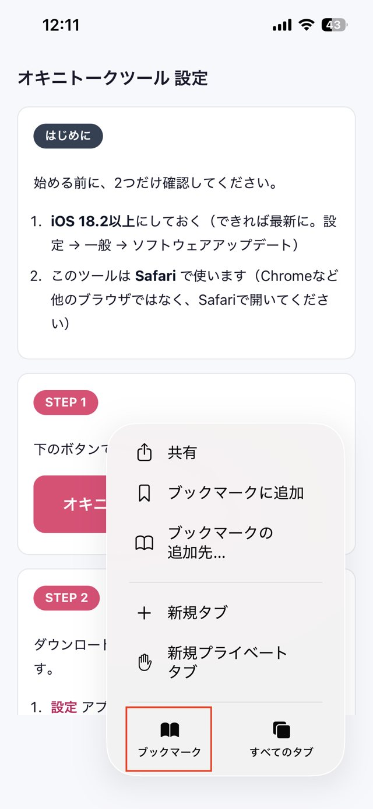
赤枠の「ブックマーク」を押す
一覧の中にあります。押すとツールが立ち上がります。
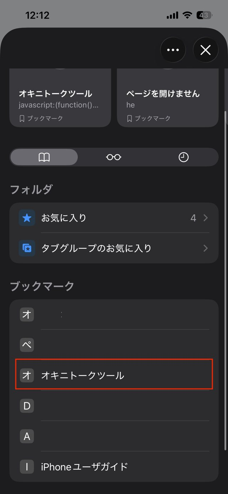
赤枠の「オキニトークツール」を押す
iOS 18.1以下だと STEP 7 の「読み込む」が出ないため、この方法は使えません。手動で登録する方法をご案内します。
手動で登録する方法をひらく